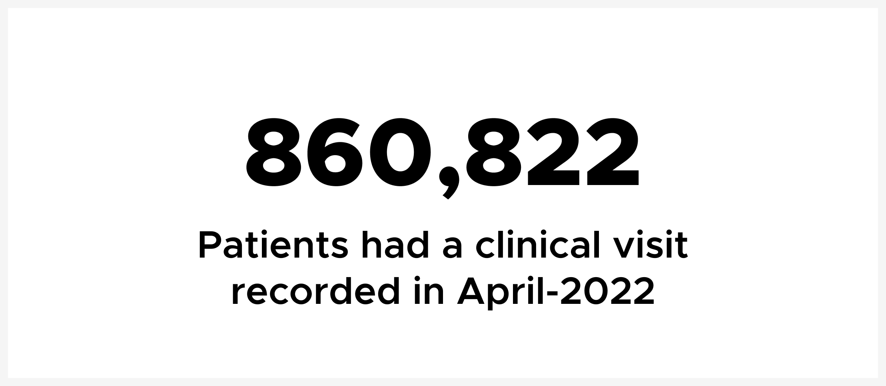

Last week, we crossed a huge milestone. A healthcare worker in India enrolled the two millionth patient into Simple as part of the India Hypertension Control Initiative. Simple is now deployed in four countries: India, Bangladesh, Ethiopia, and Sri Lanka (the newest country to use Simple!) where thousands of healthcare workers are managing millions of patients with hypertension and diabetes.
As you can see in the graph below, since the first pilot of Simple in Bathinda, Punjab, the growth of use has been phenomenal. It took about 3 years to cross the 1 million milestone and just 7 months to reach 2 million.
Keep in mind that the true measure of a digital tool for managing hypertension and diabetes isn't registrations — the key metric is follow-up visits. Retention of patients with hypertension is hard since patients usually feel fine, so often drop off from care. Also, the more patients that are registered, the higher the monthly burden of care and of data recording for busy healthcare workers. This is where Simple truly shines.

In just the month of April, healthcare workers recorded visits for over 800,000 patients. This is a remarkable achievement of the healthcare workers who do all of the hard work... and a good signal to our software team that Simple is actually easy enough to use at scale.
Thank you so much to our amazing partners who conduct training and management at extraordinary scale. And, of course, thanks to the amazing healthcare workers who do incredible, under-appreciated work. Amazing!


{kind=link}